Chapter 14 Dynamic and customized data graphics
As we discussed in Chapter 1, the practice of data science involves many different elements. In Part I, we laid a foundation for data science by developing a basic understanding of data wrangling, data visualization, and ethics. In Part II, we focused on building statistical models and using those models to learn from data. However, to this point we have focused mainly on traditional two-dimensional data (e.g., rows and columns) and data graphics. In this part, we tackle the heterogeneity found in many modern data: spatial, text, network, and relational data. We explore interactive data graphics that leap out of the printed page. Finally, we address the volume of data—concluding with a discussion of “big data” and the tools that you are likely to see when working with it.
In Chapter 2, we laid out a systematic framework for composing data graphics. A similar grammar of graphics employed by the ggplot2 package provided a mechanism for creating static data graphics in Chapter 3. In this chapter, we explore a few alternatives for making more sophisticated—and in particular, dynamic—data graphics.
14.1 Rich Web content using D3.js and htmlwidgets
As Web browsers became more complex, the desire to have interactive data visualizations in the browser grew. Thus far, all of the data visualization techniques that we have discussed are based on static images. However, newer tools have made it considerably easier to create interactive data graphics.
JavaScript is a programming language that allows Web developers to create client-side web applications. This means that computations are happening in the client’s browser, as opposed to taking place on the host’s Web servers. JavaScript applications can be more responsive to client interaction than dynamically-served Web pages that rely on a server-side scripting language, like PHP or Ruby.
The current state of the art for client-side dynamic data graphics on the Web is a JavaScript library called D3.js, or just D3, which stands for “data-driven documents.” One of the lead developers of D3 is Mike Bostock, formerly of The New York Times and Stanford University.
More recently, Ramnath Vaidyanathan and the developers at RStudio have created the htmlwidgets package, which provides a bridge between R and D3. Specifically, the htmlwidgets framework allows R developers to create packages that render data graphics in HTML using D3.
Thus, R programmers can now make use of D3 without having to learn JavaScript. Furthermore, since R Markdown documents also render as HTML, R users can easily create interactive data graphics embedded in annotated Web documents.
This is a highly active area of development.
In what follows, we illustrate a few of the more obviously useful htmlwidgets packages.
14.1.1 Leaflet
Perhaps the htmlwidgets that is getting the greatest attention is leaflet, which
enables dynamic geospatial maps to be drawn using the Leaflet JavaScript library and the OpenStreetMaps API.
The use of this package requires knowledge of spatial data, and thus we postpone our illustration of its use until Chapter 17.
14.1.2 Plot.ly
Plot.ly specializes in online dynamic data visualizations and, in particular, the ability to translate code to generate data graphics between R, Python, and other data software tools.
This project is based on the plotly.js JavaScript library, which is available under an open-source license.
The functionality of Plot.ly can be accessed in R through the plotly package.
What makes plotly especially attractive is that it can convert any ggplot2 object into a plotly object using the ggplotly() function.
This enables immediate interactivity for existing data graphics. Features like brushing (where selected points are marked) and mouse-over annotations (where points display additional information when the mouse hovers over them) are automatic.
For example, in Figure 14.1 we display a static plot of the frequency of the names of births in the United States of the four members of the Beatles over
time (using data from the babynames package).
library(tidyverse)
library(mdsr)
library(babynames)
Beatles <- babynames %>%
filter(name %in% c("John", "Paul", "George", "Ringo") & sex == "M") %>%
mutate(name = factor(name, levels = c("John", "George", "Paul", "Ringo")))
beatles_plot <- ggplot(data = Beatles, aes(x = year, y = n)) +
geom_line(aes(color = name), size = 2)
beatles_plot
Figure 14.1: ggplot2 depiction of the frequency of Beatles names over time.
After running the ggplotly() function on that object, a plot is displayed in RStudio or in a Web browser.
The exact values can be displayed by mousing-over the lines.
In addition, brushing, panning, and zooming are supported.
In Figure 14.2, we show that image.
library(plotly)
ggplotly(beatles_plot)Figure 14.2: An interactive plot of the frequency of Beatles names over time.
14.1.3 DataTables
The DataTables (DT) package provides a quick way to make data tables interactive.
Simply put, it enables tables to be searchable, sortable, and pageable automatically.
Figure 14.3 displays the first 10 rows of the Beatles table as rendered by DT. Note the search box and clickable sorting arrows.
datatable(Beatles, options = list(pageLength = 10))Figure 14.3: Output of the DT package applied to the Beatles names.
14.1.4 Dygraphs
The dygraphs package generates interactive time series plots with the ability to brush over time intervals and zoom in and out.
For example, the popularity of Beatles names could be made dynamic with just a little bit of extra code.
Here, the dynamic range selector allows for the easy selection of specific time periods on which to focus.
In Figure 14.4, one can zoom in on the uptick in the popularity of the names John and Paul during the first half of the 1960s.
library(dygraphs)
Beatles %>%
filter(sex == "M") %>%
select(year, name, prop) %>%
pivot_wider(names_from = name, values_from = prop) %>%
dygraph(main = "Popularity of Beatles names over time") %>%
dyRangeSelector(dateWindow = c("1940", "1980"))Figure 14.4: (ref:dygraphs-beatles-cap)
(ref:dygraphs-beatles-cap) The dygraphs display of the popularity of Beatles names over time. In this screenshot, the years range from 1940 to 1980, and one can expand or contract that timespan.
14.1.5 Streamgraphs
A streamgraph is a particular type of time series plot that uses area as a visual cue for quantity.
Streamgraphs allow you to compare the values of several time series at once.
The streamgraph htmlwidget provides access to the streamgraphs.js D3 library.
Figure 14.5 displays our Beatles names time series as a streamgraph.
# remotes::install_github("hrbrmstr/streamgraph")
library(streamgraph)
Beatles %>%
streamgraph(key = "name", value = "n", date = "year") %>%
sg_fill_brewer("Accent")Figure 14.5: A screenshot of the streamgraph display of Beatles names over time.
14.2 Animation
The gganimate package provides a simple way to create animations (i.e., GIFs) from ggplot2 data graphics. In Figure 14.6, we illustrate a simple transition, wherein the lines indicating the popularity of each band member’s name over time grows and shrinks.
library(gganimate)
library(transformr)
beatles_animation <- beatles_plot +
transition_states(
name,
transition_length = 2,
state_length = 1
) +
enter_grow() +
exit_shrink()
animate(beatles_animation, height = 400, width = 800)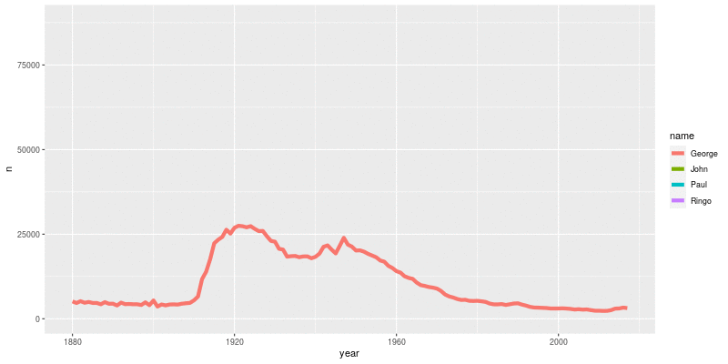
Figure 14.6: Evolving Beatles plot created by gganimate.
14.3 Flexdashboard
The flexdashboard package provides a straightforward way to create and publish data visualizations as a dashboard. Dashboards are a common way that data scientists make data available to managers and others to make decisions. They will often include a mix of graphical and textual displays that can be targeted to their needs.
Here we provide an example of an R Markdown file that creates a static dashboard of information from the palmerpenguins package. flexdashboard divides up the page into rows and columns. In this case, we create two columns of nearly equal width. The second column (which appears on the right in Figure 14.8) is further subdivided into two rows, each marked by a third-level section header.
---
title: "Flexdashboard example (Palmer Penguins)"
output:
flexdashboard::flex_dashboard:
orientation: columns
vertical_layout: fill
---
```{r setup, include=FALSE}
library(flexdashboard)
library(palmerpenguins)
library(tidyverse)
```
Column {data-width=400}
-----------------------------------------------------------------------
### Chart A
```{r}
ggplot(
penguins,
aes(x = bill_length_mm, y = bill_depth_mm, color = species)
) +
geom_point()
```
Column {data-width=300}
-----------------------------------------------------------------------
### Chart B
```{r}
DT::datatable(penguins)
```
### Chart C
```{r}
roundval <- 2
cleanmean <- function(x, roundval = 2, na.rm = TRUE) {
return(round(mean(x, na.rm = na.rm), digits = roundval))
}
summarystat <- penguins %>%
group_by(species) %>%
summarize(
`Average bill length (mm)` = cleanmean(bill_length_mm),
`Average bill depth (mm)` = cleanmean(bill_depth_mm)
)
knitr::kable(summarystat)
```
Figure 14.7: Sample flexdashboard input file.
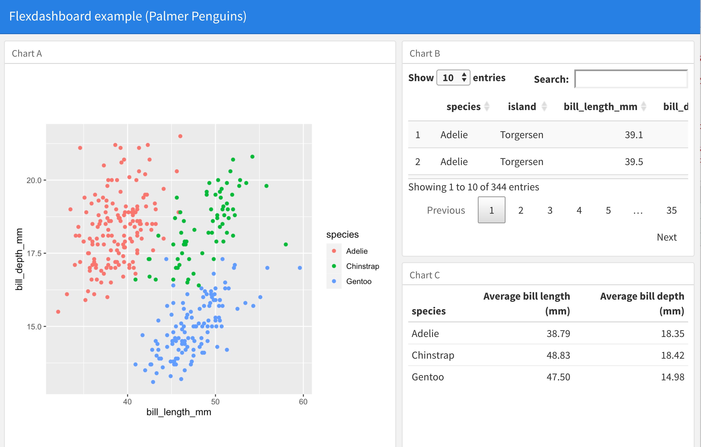
Figure 14.8: Sample flexdashboard output.
The upper-right panel of this dashboard employs DT to provide a data table that the user can interact with. However, the dashboard itself is not interactive, in the sense that the user can only change the display through this HTML widget. Changing the display in that upper-right panel has no effect on the other panels. To create a fully interactive web application, we need a more powerful tool, which we introduce in the next section.
14.4 Interactive web apps with Shiny
Shiny is a framework for R that can be used to create interactive web applications and dynamic dashboards. It is particularly attractive because it provides a high-level structure to easily prototype and deploy apps. While a full discussion of Shiny is outside the scope of this book, we will demonstrate how one might create a dynamic web app that allows the user to explore the data set of babies with the same names as the Beatles.
One way to write a Shiny app involves creating a ui.R file that controls the user interface, and a server.R file to
display the results.
(Alternatively, the two files can be combined into a single app.R file that includes both components.)
These files communicate with each other using reactive objects input and output.
Reactive expressions are special constructions that use input from widgets to return a value.
These allow the application to automatically update when the user clicks on a button, changes a slider, or provides other input.
14.4.1 Example: interactive display of the Beatles
For this example, we’d like to let the user pick the start and end years along with a set of checkboxes to include their favorite Beatles.
The ui.R file shown in Figure 14.9 sets up a title, creates inputs for the start and end years (with default values), creates a set of check boxes for each of the Beatles’ names, then plots the result.
# ui.R
beatles_names <- c("John", "Paul", "George", "Ringo")
shinyUI(
bootstrapPage(
h3("Frequency of Beatles names over time"),
numericInput(
"startyear", "Enter starting year",
value = 1960, min = 1880, max = 2014, step = 1
),
numericInput(
"endyear", "Enter ending year",
value = 1970, min = 1881, max = 2014, step = 1
),
checkboxGroupInput(
'names', 'Names to display:',
sort(unique(beatles_names)),
selected = c("George", "Paul")
),
plotOutput("plot")
)
)Figure 14.9: User interface code for a simple Shiny app.
The server.R file shown in Figure 14.10 loads needed packages, performs some data wrangling, extracts the reactive objects using the input object, then generates the desired plot.
The renderPlot() function returns a reactive object called plot that is referenced in ui.R.
Within this function, the values for the years and Beatles are used within a call to filter() to identify what to plot.
# server.R
library(tidyverse)
library(babynames)
library(shiny)
Beatles <- babynames %>%
filter(name %in% c("John", "Paul", "George", "Ringo") & sex == "M")
shinyServer(
function(input, output) {
output$plot <- renderPlot({
ds <- Beatles %>%
filter(
year >= input$startyear, year <= input$endyear,
name %in% input$names
)
ggplot(data = ds, aes(x = year, y = prop, color = name)) +
geom_line(size = 2)
})
}
)Figure 14.10: Server processing code for a simple Shiny app.
Shiny Apps can be run locally within RStudio, or deployed on a Shiny App server (such as http://shinyapps.io). Please see the book website at https://mdsr-book.github.io for access to the code files. Figure 14.11 displays the results when only Paul and George are checked when run locally.
library(shiny)
runApp('.')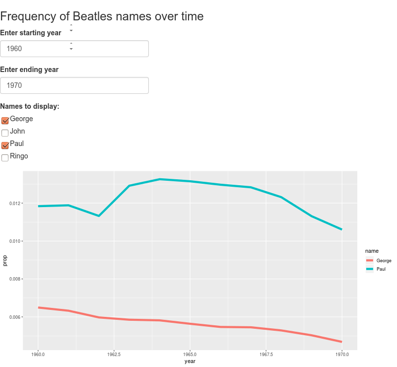
Figure 14.11: A screenshot of the Shiny app displaying babies with Beatles names.
14.4.2 More on reactive programming
Shiny is an extremely powerful and complicated system to master. Repeated and gradual exposure to reactive programming and widgets will pay off in terms of flexible and attractive displays. For this example, we demonstrate some additional features that show off some of the possibilities: more general reactive objects, dynamic user interfaces, and progress indicators.
Here we display information about health violations from New York City restaurants.
The user has the option to specify a borough (district) within New York City and a cuisine.
Since not every cuisine is available within every borough, we need to dynamically filter the list.
We do this by calling uiOutput().
This references a reactive object created within the server() function.
The output is displayed in a dataTableOuput() widget from the DT package.
library(tidyverse)
library(shiny)
library(shinybusy)
library(mdsr)
mergedViolations <- Violations %>%
left_join(Cuisines)
ui <- fluidPage(
titlePanel("Restaurant Explorer"),
fluidRow(
# some things take time: this lets users know
add_busy_spinner(spin = "fading-circle"),
column(
4,
selectInput(inputId = "boro",
label = "Borough:",
choices = c(
"ALL",
unique(as.character(mergedViolations$boro))
)
)
),
# display dynamic list of cuisines
column(4, uiOutput("cuisinecontrols"))
),
# Create a new row for the table.
fluidRow(
DT::dataTableOutput("table")
)
)Figure 14.12: User interface processing code for a more sophisticated Shiny app.
The code shown in Figure 14.12 also includes a call to the add_busy_spinner() function from the shinybusy package.
It takes time to render the various reactive objects, and the spinner shows up to alert the user that there will be a slight delay.
server <- function(input, output) {
datasetboro <- reactive({ # Filter data based on selections
data <- mergedViolations %>%
select(
dba, cuisine_code, cuisine_description, street,
boro, zipcode, score, violation_code, grade_date
) %>%
distinct()
req(input$boro) # wait until there's a selection
if (input$boro != "ALL") {
data <- data %>%
filter(boro == input$boro)
}
data
})
datasetcuisine <- reactive({ # dynamic list of cuisines
req(input$cuisine) # wait until list is available
data <- datasetboro() %>%
unique()
if (input$cuisine != "ALL") {
data <- data %>%
filter(cuisine_description == input$cuisine)
}
data
})
output$table <- DT::renderDataTable(DT::datatable(datasetcuisine()))
output$cuisinecontrols <- renderUI({
availablelevels <-
unique(sort(as.character(datasetboro()$cuisine_description)))
selectInput(
inputId = "cuisine",
label = "Cuisine:",
choices = c("ALL", availablelevels)
)
})
}
shinyApp(ui = ui, server = server)Figure 14.13: Server processing code for a more sophisticated Shiny app.
The code shown in Figure 14.13 makes up the rest of the Shiny app.
We create a reactive object that is dynamically filtered based on which borough and cuisine are selected.
Calls made to the req() function wait until the reactive inputs are available (at startup these will take time to populate with the default values).
The two functions are linked with a call to the shinyApp() function.
Figure 14.14 displays the Shiny app when it is running.
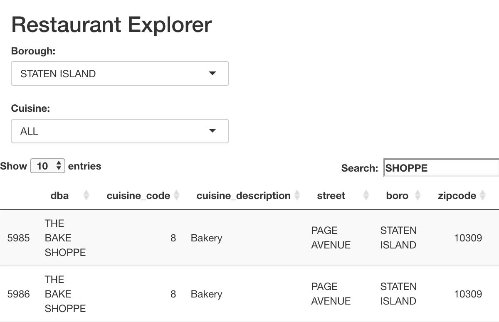
Figure 14.14: A screenshot of the Shiny app displaying New York City restaurants.
14.5 Customization of ggplot2 graphics
There are endless possibilities for customizing plots in R and ggplot2. One important concept is the notion of themes. In the next section, we will illustrate how to customize a ggplot2 theme by defining one we include in the mdsr package.
ggplot2 provides many different ways to change the appearance of a plot.
A comprehensive system of customizations is called a theme.
In ggplot2, a theme is a list of 93 different attributes that define how axis labels, titles, grid lines, etc. are drawn.
The default theme is theme_grey().
length(theme_grey())[1] 93For example, notable features of theme_grey() are the distinctive grey background and white grid lines.
The panel.background and panel.grid properties control these aspects of the theme.
theme_grey() %>%
pluck("panel.background")List of 5
$ fill : chr "grey92"
$ colour : logi NA
$ size : NULL
$ linetype : NULL
$ inherit.blank: logi TRUE
- attr(*, "class")= chr [1:2] "element_rect" "element"theme_grey() %>%
pluck("panel.grid")List of 6
$ colour : chr "white"
$ size : NULL
$ linetype : NULL
$ lineend : NULL
$ arrow : logi FALSE
$ inherit.blank: logi TRUE
- attr(*, "class")= chr [1:2] "element_line" "element"A number of useful themes are built into ggplot2, including theme_bw() for a more traditional white background, theme_minimal(), and theme_classic().
These can be invoked using the eponymous functions. We compare theme_grey() with theme_bw() in Figure 14.15.
beatles_plot
beatles_plot + theme_bw()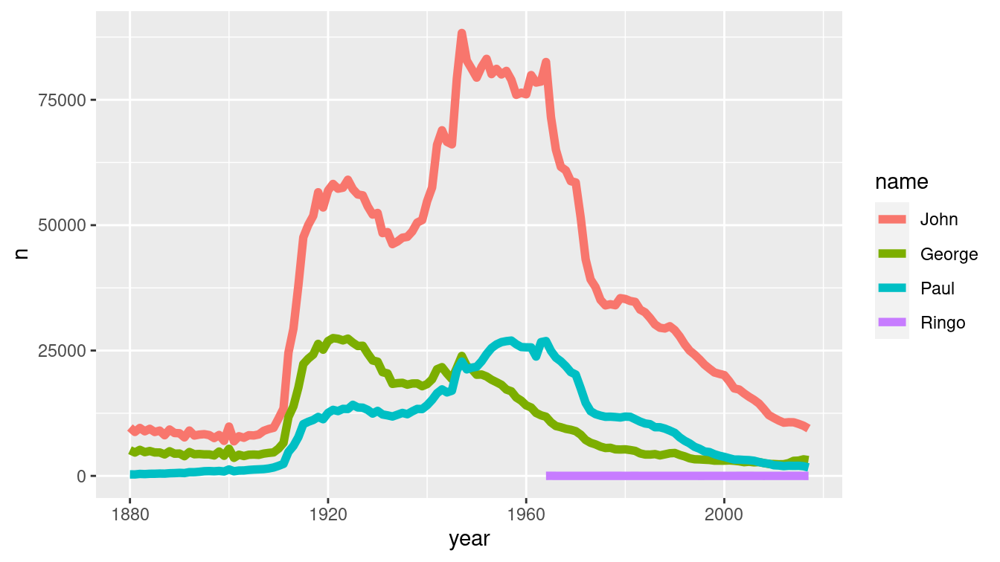
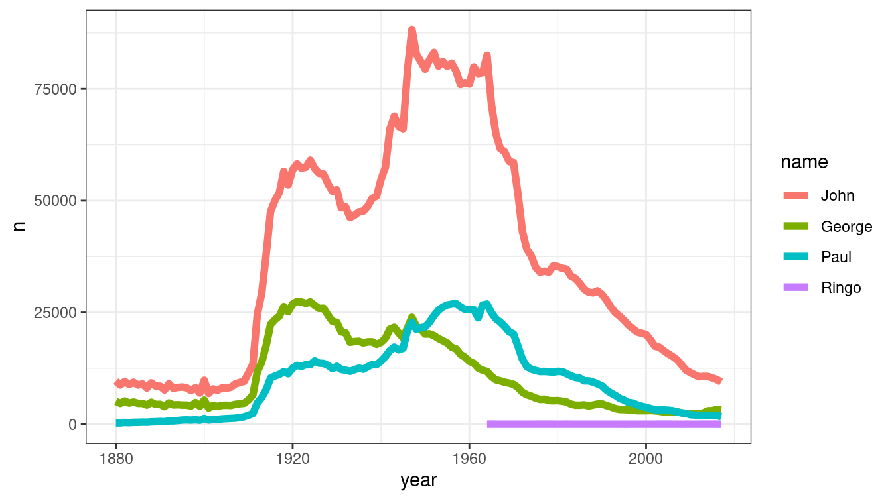
Figure 14.15: (ref:theme-bw-cap)
(ref:theme-bw-cap) Comparison of two ggplot2 themes. At left, the default grey theme. At right, the black-and-white theme.
We can modify a theme on-the-fly using the theme() function.
In Figure 14.16 we illustrate how to change the background color and major grid lines color.
beatles_plot +
theme(
panel.background = element_rect(fill = "cornsilk"),
panel.grid.major = element_line(color = "dodgerblue")
)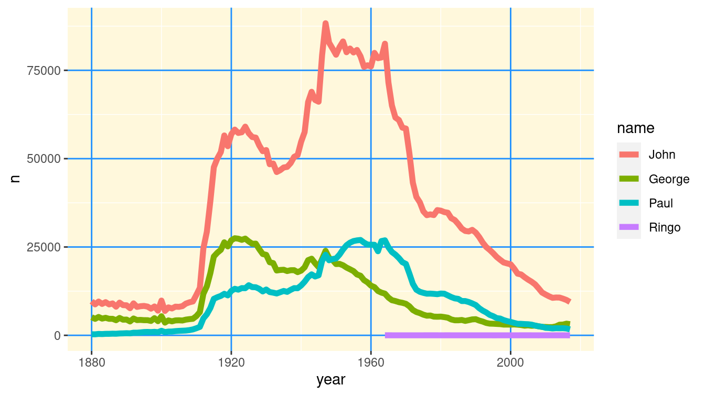
Figure 14.16: Beatles plot with custom ggplot2 theme.
How did we know the names of those colors? You can display R’s built-in colors using the colors() function.
There are more intuitive color maps on the Web.
{kind=link}
head(colors())[1] "white" "aliceblue" "antiquewhite" "antiquewhite1"
[5] "antiquewhite2" "antiquewhite3"To create a new theme, write a function that will return a complete ggplot2 theme.
One could write this function by completely specifying all 93 items.
However, in this case we illustrate how the %+replace% operator can be used to modify an existing theme.
We start with theme_grey() and change the background color, major and minor grid lines colors, and the default font.
theme_mdsr <- function(base_size = 12, base_family = "Helvetica") {
theme_grey(base_size = base_size, base_family = base_family) %+replace%
theme(
axis.text = element_text(size = rel(0.8)),
axis.ticks = element_line(color = "black"),
legend.key = element_rect(color = "grey80"),
panel.background = element_rect(fill = "whitesmoke", color = NA),
panel.border = element_rect(fill = NA, color = "grey50"),
panel.grid.major = element_line(color = "grey80", size = 0.2),
panel.grid.minor = element_line(color = "grey92", size = 0.5),
strip.background = element_rect(fill = "grey80", color = "grey50",
size = 0.2)
)
}With our new theme defined, we can apply it in the same way as any of the built-in themes—namely, by calling the theme_mdsr() function.
Figure 14.17 shows how this stylizes the faceted Beatles time series plot.
beatles_plot + facet_wrap(~name) + theme_mdsr()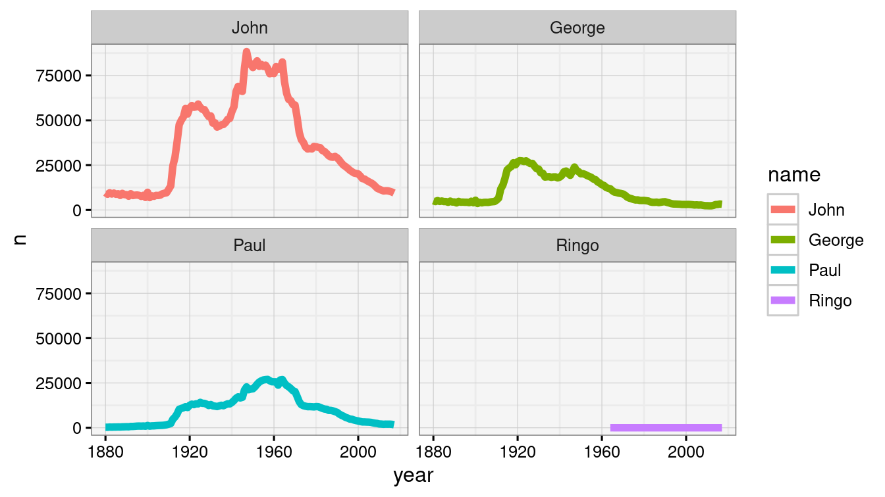
Figure 14.17: Beatles plot with customized mdsr theme.
Many people have taken to creating their own themes for ggplot2.
In particular, the ggthemes package features useful (theme_solarized()), humorous (theme_tufte()), whimsical (theme_fivethirtyeight()), and even derisive (theme_excel()) themes. Another humorous theme is theme_xkcd(), which attempts to mimic the popular Web comic’s distinctive hand-drawn styling.
This functionality is provided by the xkcd package.
library(xkcd)To set xkcd up, we need to download the pseudo-handwritten font, import it, and then loadfonts().
Note that the destination for the fonts is system dependent: On Mac OS X this should be ~/Library/Fonts while for Ubuntu it is ~/.fonts.
download.file(
"http://simonsoftware.se/other/xkcd.ttf",
# ~/Library/Fonts/ for Mac OS X
dest = "~/.fonts/xkcd.ttf", mode = "wb"
)font_import(pattern = "[X/x]kcd", prompt = FALSE)
loadfonts()In Figure 14.18, we show the xkcd-styled plot of the popularity of the Beatles names.
beatles_plot + theme_xkcd()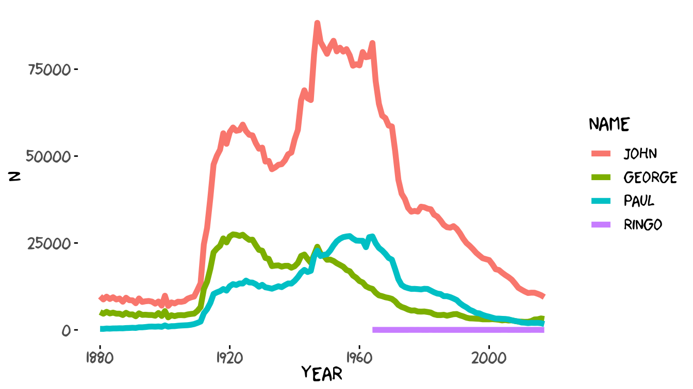
Figure 14.18: Prevalence of Beatles names drawn in the style of an xkcd Web comic.
14.6 Extended example: Hot dog eating
Writing in 2011, former New York Times data graphic intern Nathan Yau noted that “Adobe Illustrator is the industry standard. Every graphic that goes to print at The New York Times either was created or edited in Illustrator” (Yau 2011). To underscore his point, Yau presents the data graphic shown in Figure 14.19, created in R but modified in Illustrator.
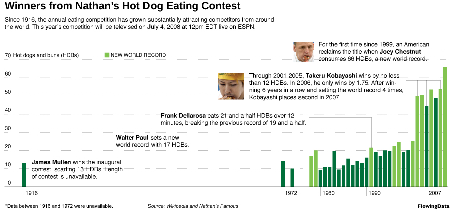
Figure 14.19: Nathan Yau’s Hot Dog Eating data graphic that was created in R but modified using Adobe Illustrator (reprinted with permission from flowingdata.com).
Ten years later, The New York Times data graphic department now produces much of their content using D3.js, an interactive JavaScript library that we discussed in Section 14.1.
What follows is our best attempt to recreate a static version of Figure 14.19 entirely within R using ggplot2 graphics.
After saving the plot as a PDF, we can open it in Illustrator or Inkscape for further customization if necessary.
Undertaking such “Copy the Master” exercises (D. Nolan and Perrett 2016) is a good way to deepen your skills.
library(tidyverse)
library(mdsr)
hd <- read_csv(
"http://datasets.flowingdata.com/hot-dog-contest-winners.csv"
) %>%
janitor::clean_names()
glimpse(hd)Rows: 31
Columns: 5
$ year <dbl> 1980, 1981, 1982, 1983, 1984, 1985, 1986, 1987, 1988, 1…
$ winner <chr> "Paul Siederman & Joe Baldini", "Thomas DeBerry", "Stev…
$ dogs_eaten <dbl> 9.1, 11.0, 11.0, 19.5, 9.5, 11.8, 15.5, 12.0, 14.0, 13.…
$ country <chr> "United States", "United States", "United States", "Mex…
$ new_record <dbl> 0, 0, 0, 0, 0, 0, 0, 0, 0, 0, 0, 1, 0, 0, 0, 0, 1, 1, 0…The hd data table doesn’t provide any data from before 1980, so we need to estimate them from Figure 14.19 and manually add these rows to our data frame.
new_data <- tibble(
year = c(1979, 1978, 1974, 1972, 1916),
winner = c(NA, "Walter Paul", NA, NA, "James Mullen"),
dogs_eaten = c(19.5, 17, 10, 14, 13),
country = rep(NA, 5), new_record = c(1,1,0,0,0)
)
hd <- hd %>%
bind_rows(new_data)
glimpse(hd)Rows: 36
Columns: 5
$ year <dbl> 1980, 1981, 1982, 1983, 1984, 1985, 1986, 1987, 1988, 1…
$ winner <chr> "Paul Siederman & Joe Baldini", "Thomas DeBerry", "Stev…
$ dogs_eaten <dbl> 9.1, 11.0, 11.0, 19.5, 9.5, 11.8, 15.5, 12.0, 14.0, 13.…
$ country <chr> "United States", "United States", "United States", "Mex…
$ new_record <dbl> 0, 0, 0, 0, 0, 0, 0, 0, 0, 0, 0, 1, 0, 0, 0, 0, 1, 1, 0…Note that we only want to draw some of the years on the horizontal axis and only every 10th value on the vertical axis.
xlabs <- c(1916, 1972, 1980, 1990, 2007)
ylabs <- seq(from = 0, to = 70, by = 10)Finally, the plot only shows the data up until 2008, even though the file contains more recent information than that. Let’s define a subset that we’ll use for plotting.
hd_plot <- hd %>%
filter(year < 2008)Our most basic plot is shown in Figure 14.20.
p <- ggplot(data = hd_plot, aes(x = year, y = dogs_eaten)) +
geom_col()
p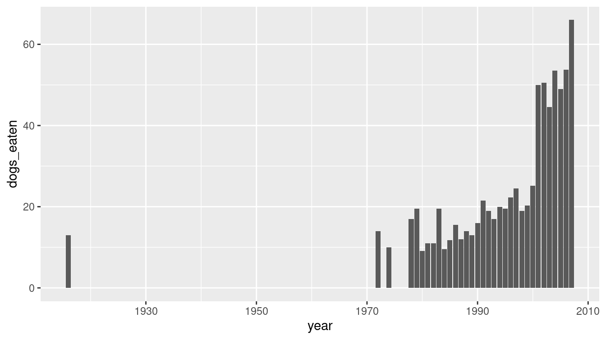
Figure 14.20: A simple bar graph of hot dog eating.
This doesn’t provide the context of Figure 14.19, nor the pizzazz. Although most of the important data are already there, we still have a great deal of work to do to make this data graphic as engaging as Figure 14.19. Our recreation is shown in Figure 14.21.
We aren’t actually going to draw the \(y\)-axis—instead we are going to place the labels for the \(y\) values on the plot. We’ll put the locations for those values in a data frame.
ticks_y <- tibble(x = 1912, y = ylabs)There are many text annotations, and we will collect those into a single data frame. Here, we use the tribble() function to create a data frame row-by-row. The format of the input is similar to a CSV (see Section 6.4.1.1).
text <- tribble(
~x, ~y, ~label, ~adj,
# Frank Dellarosa
1953, 37, paste(
"Frank Dellarosa eats 21 and a half HDBs over 12",
"\nminutes, breaking the previous record of 19 and a half."), 0,
# Joey Chestnut
1985, 69, paste(
"For the first time since 1999, an American",
"\nreclaims the title when Joey Chestnut",
"\nconsumes 66 HDBs, a new world record."), 0,
# Kobayashi
1972, 55, paste(
"Through 2001-2005, Takeru Kobayashi wins by no less",
"\nthan 12 HDBs. In 2006, he only wins by 1.75. After win-",
"\nning 6 years in a row and setting the world record 4 times,",
"\nKobayashi places second in 2007."), 0,
# Walter Paul
1942, 26, paste(
"Walter Paul sets a new",
"\nworld record with 17 HDBs."), 0,
# James Mullen
1917, 10.5, paste(
"James Mullen wins the inaugural",
"\ncontest, scarfing 13 HDBs. Length",
"\nof contest unavailable."), 0,
1935, 72, "NEW WORLD RECORD", 0,
1914, 72, "Hot dogs and buns (HDBs)", 0,
1940, 2, "*Data between 1916 and 1972 were unavailable", 0,
1922, 2, "Source: FlowingData", 0,
)The grey segments that connect the text labels to the bars in the plot must be manually specified in another data frame.
Here, we use tribble() to construct a data frame in which each row corresponds to a single segment.
Next, we use the unnest() function to expand the data frame so that each row corresponds to a single point.
This will allow us to pass it to the geom_segment() function.
segments <- tribble(
~x, ~y,
c(1978, 1991, 1991, NA), c(37, 37, 21, NA),
c(2004, 2007, 2007, NA), c(69, 69, 66, NA),
c(1998, 2006, 2006, NA), c(58, 58, 53.75, NA),
c(2005, 2005, NA), c(58, 49, NA),
c(2004, 2004, NA), c(58, 53.5, NA),
c(2003, 2003, NA), c(58, 44.5, NA),
c(2002, 2002, NA), c(58, 50.5, NA),
c(2001, 2001, NA), c(58, 50, NA),
c(1955, 1978, 1978), c(26, 26, 17)
) %>%
unnest(cols = c(x, y))Finally, we draw the plot, layering on each of the elements that we defined above.
p +
geom_col(aes(fill = factor(new_record))) +
geom_hline(yintercept = 0, color = "darkgray") +
scale_fill_manual(name = NULL,
values = c("0" = "#006f3c", "1" = "#81c450")
) +
scale_x_continuous(
name = NULL, breaks = xlabs, minor_breaks = NULL,
limits = c(1912, 2008), expand = c(0, 1)
) +
scale_y_continuous(
name = NULL, breaks = ylabs, labels = NULL,
minor_breaks = NULL, expand = c(0.01, 1)
) +
geom_text(
data = ticks_y, aes(x = x, y = y + 2, label = y),
size = 3
) +
labs(
title = "Winners from Nathan's Hot Dog Eating Contest",
subtitle = paste(
"Since 1916, the annual eating competition has grown substantially",
"attracting competitors from around\nthe world.",
"This year's competition will be televised on July 4, 2008",
"at 12pm EDT live on ESPN.\n\n\n"
)
) +
geom_text(
data = text, aes(x = x, y = y, label = label),
hjust = "left", size = 3
) +
geom_path(
data = segments, aes(x = x, y = y), col = "darkgray"
) +
# Key
geom_rect(
xmin = 1933, ymin = 70.75, xmax = 1934.3, ymax = 73.25,
fill = "#81c450", color = "white"
) +
guides(fill = FALSE) +
theme(
panel.background = element_rect(fill = "white"),
panel.grid.major.y =
element_line(color = "gray", linetype = "dotted"),
plot.title = element_text(face = "bold", size = 16),
plot.subtitle = element_text(size = 10),
axis.ticks.length = unit(0, "cm")
)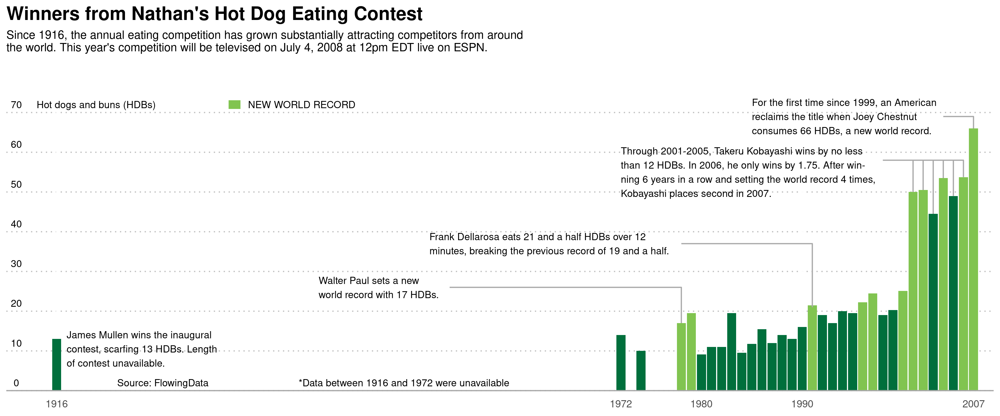
Figure 14.21: Recreation of the hot dog graphic.
14.7 Further resources
The htmlwidgets website includes a gallery of showcase applications of JavaScript in R.
Details and examples of use of the flexdashboard package can be found at https://rmarkdown.rstudio.com/flexdashboard.
The Shiny gallery (http://shiny.rstudio.com/gallery) includes a number of interactive visualizations (and associated code), many of which feature JavaScript libraries. Nearly 200 examples of widgets and idioms in Shiny are available at https://github.com/rstudio/shiny-examples. The RStudio Shiny cheat sheet is a useful reference. Hadley Wickham (2020a) provides a comprehensive guide to many aspects of Shiny development.
The extrafont package makes use of the full suite of fonts that are installed on your computer, rather than the relatively small sets of fonts that R knows about. (These are often device and operating system dependent, but three fonts—sans, serif, and mono—are always available.) For a
more extensive tutorial on how to use the extrafont package, see http://tinyurl.com/fonts-rcharts.
14.8 Exercises
Problem 1 (Easy): Modify the Shiny app that displays the frequency of Beatles names over time so that it has a checkboxInput() widget that uses the theme_tufte() theme from the ggthemes package.
Problem 2 (Medium): Create a Shiny app that demonstrates the use of at least five widgets.
Problem 3 (Medium): The macleish package contains weather data collected every 10 minutes in 2015 from two weather stations in Whately, Massachusetts.
Using the ggplot2 package, create a data graphic that displays the average temperature over each 10-minute interval (temperature) as a function of time (when) from the whately_2015 dataframe. Create annotations to include context about the four seasons: the date of the vernal and autumnal equinoxes, and the summer and winter solstices.
Problem 4 (Medium): Modify the restaurant violations Shiny app so that it displays a table of the number of restaurants within a given type of cuisine along with a count of restaurants (as specified by the dba variable. (Hint: Be sure not to double count. The dataset should include 842 unique pizza restaurants in all boroughs and 281 Caribbean restaurants in Brooklyn.)
Problem 5 (Medium): Create your own ggplot2 theme. Describe the choices you made and justify why you made them using the principles introduced earlier.
Problem 6 (Medium): The following code generates a scatterplot with marginal histograms.
p <- ggplot(HELPrct, aes(x = age, y = cesd)) +
geom_point() +
theme_classic() +
stat_smooth(method = "loess", formula = y ~ x, size = 2)
ggExtra::ggMarginal(p, type = "histogram", binwidth = 3)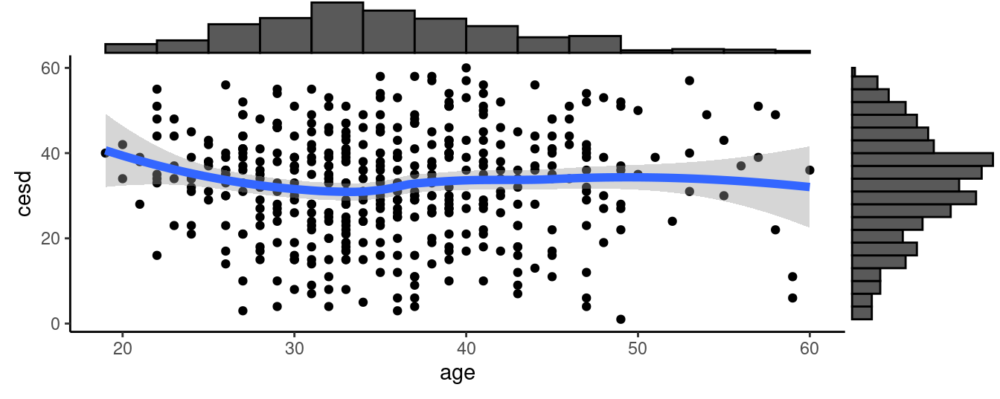
Find an example where such a display might be useful. Be sure to interpret your graphical display
Problem 7 (Medium): Using data from the palmerpenguins package, create a Shiny app that displays measurements from the penguins dataframe. Allow the user to select a species or a gender, and to choose between various attributes on a scatterplot. (Hint: examples of similar apps can be found at the Shiny gallery).
Problem 8 (Medium): Create a Shiny app to display an interactive time series plot of the macleish weather data. Include a selection box to alternate between data from the whately_2015 and orchard_2015 weather stations.
Add a selector of dates to include in the display. Do you notice any irregularities?
Problem 9 (Hard): Repeat the earlier question using the weather data from the MacLeish field station, but include context on major storms listed on the Wikipedia pages: 2014–2015 North American Winter and 2015–2016 North American Winter.
Problem 10 (Hard): Using data from the Lahman package, create a Shiny app that displays career leaderboards similar to the one at http://www.baseball-reference.com/leaders/HR_season.shtml. Allow the user to select a statistic of their choice, and to choose between Career, Active, Progressive, and Yearly League leaderboards. (Hint: examples of similar apps can be found at the Shiny gallery.)
14.9 Supplementary exercises
Available at https://mdsr-book.github.io/mdsr2e/dataviz-III.html#dataviz-III-online-exercises
Problem 1 (Medium):
Write a Shiny app that allows the user to pick variables from the HELPrct data in the mosaicData package and to generate a scatterplot.
Include a checkbox to add a smoother and a choice of transformations for the y axis variable.